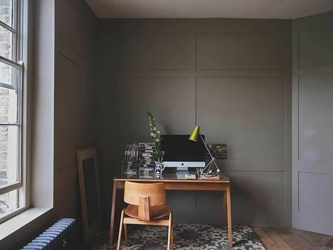

ЖЕЛТЫЙ И СЕРЫЙ
Желтому (Illuminating) и серому светлому (Ultimate Gray) отвели главные роли эксперты института Pantone. По мнению специалистов, яркость и жизнерадостность первого отлично гармонирует с силой, энергичностью, устойчивостью и прочностью второго. Вместе они способствуют укреплению уверенности в себе и усилению надежды на лучшее.
Такое сочетание, полагают эксперты, позволяет легко создать гармоничное оформление. Например, на фоне серых стен хорошо смотрятся фотообои или картины на холсте в желтых тонах. Выигрышное решение – изображение одного крупного предмета. Поддержать цветовую гамму можно с помощью желтого текстиля.
Эксперты Pantone 2021 цвет года в интерьере рекомендуют дополнить оттенками графита, серебра, стали, горчицы, песка, палевым. Так палитра будет более богатой.
ПЫЛЬНЫЙ БИРЮЗОВЫЙ
Производитель красок из США Benjamin Moore предлагает обратить внимание на холодные оттенки. В первую очередь, на эгейскую бирюзу (Aegean Teal) – неяркую, словно припыленную.
Ее можно использовать и как базовый цвет, и для создания акцентов. Подходит для любого помещения: гостиной, спальни, ванной, детской, кухни.
СМЕЛАЯ ЗЕМЛЯ
Английская Dulux делает акцент на природный оттенок под названием «смелая земля» (Brave Ground ) – землисто-бежевый или серо-бежевый. Эксперты компании полагают, что он позволяет достичь в интерьере баланса и равновесия.
Они предлагают цветовые тенденции 2021 в интерьере на основе этого теплого натурального оттенка – бежевый, песочный, коричневый.
Назовем несколько идей оформления от Dulux.
- Монохромная палитра в бежевых тонах. Подходит и для классического, и для современного оформления, гармонирует с натуральными материалами (камнем, желтоватым металлом, деревом).
- Brave Ground в качестве фона для оттенков красного и розового.
- Комбинацию «смелой земли» с другими природными тонами: песочным, коричневым, бордовым, - и элегантными фактурами мрамора, меди и бархата.
- Четвертый вариант - Brave Ground с тонами земли, воды и зелени: синим, зеленым, коричневым. Плюс плетеная мебель, керамика, дерево и живые растения. Эта идея поддерживается и компанией Farrow&Ball.
НЕЖНАЯ ПАСТЕЛЬ И ЯРКИЙ РУСТИК
Норвежские дизайнеры Jotun Lady предложили сразу четыре палитры, объединив их под заголовком «Rediscover», что в переводе означает «открыть себя снова». Комбинация включает теплые рустикальные тона (золотисто-розовый, ярко-оранжевый и т.д.), мягкие натуральные оттенки, нежные пастельные, легкие голубые.
URBANE BRONZE
Оттенок «городская бронза» (Urbane Bronze) – землисто-серый с древесными и металлическими нотами, выбрал своим фаворитом американский производитель лакокрасочных материалов. Этот цвет, по мнению экспертов компании, помогает сформировать ощущение защищенного пространства. Предлагается дополнять его светлыми тонами кожи, металла, дерева, натурального камня.
ГЛУБОКИЙ КРАСНО-РОЗОВЫЙ, ТЕПЛЫЙ КОРИЧНЕВЫЙ
Добавить в окружение насыщенных тонов предлагает и Farrow&Ball. Роскошный Preference Red №297, в котором сочетаются красный и розовый, актуален в спальне и гостиной.
Ставку компания также делает и на теплый коричневый - Broccoli Brown №108 и Callagan №214.
21 ОТТЕНОК
Канадская Behr решила не ограничиваться и строить интерьер с использованием двадцати одного оттенка. Чтобы было проще, предложила шесть схем по зонам в помещении:
- спокойствие – зеленый, синий, голубой, травянистый, бежевый как база;
- безмятежность – светлая пастель;
- тишина – коричневый, темно-зеленый, синий насыщенных тонов в комбинации с деревом, камнем, бархатом и кожей, для просторных помещений;
- оптимизм – пурпурный, ярко-оранжевый, коралловый для создания приподнятого настроения;
- кэжуал – бежевые оттенки миндаля, мокко, сумерек в каньоне;
- на фасаде эксперты компании рекомендуют акцентировать внимание на окнах, дверях, декоративных деталях, выбирая яркие краски.